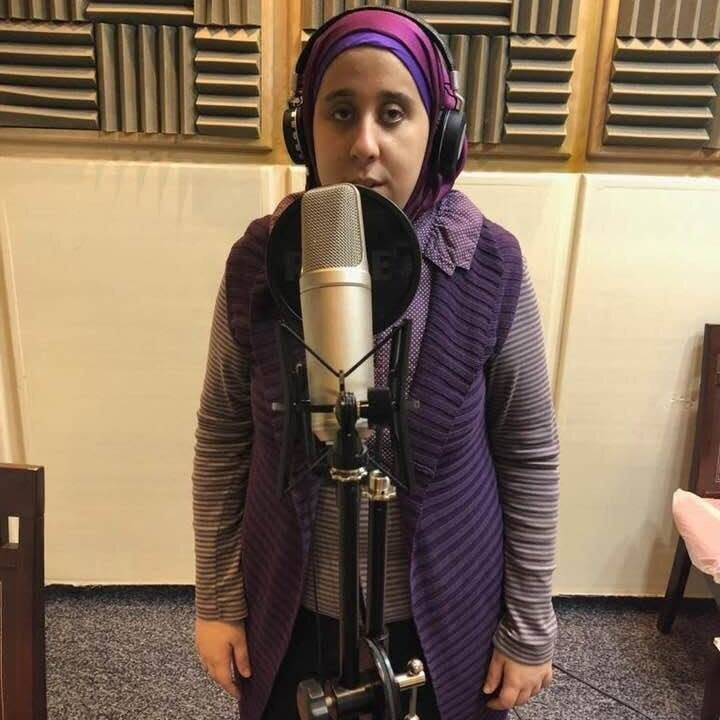
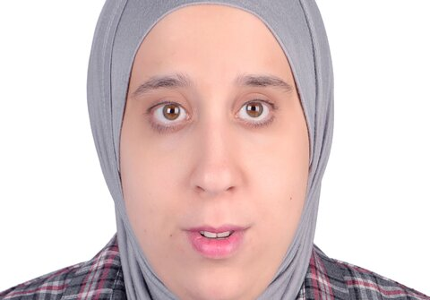

إسراء ماجد
ملحنة وموزعة موسيقية ومهندسة صوت
عنّي

أنا ملحنة وموزعة موسيقية ومهندسة صوت. أعمل في التلحين والتوزيع الموسيقي والمونتاج الصوتي والميكس والماستر، ولديّ استوديو الإسراء للصوتيات الذي أسجّل وأنفّذ فيه أعمالي.
خريجة كلية الآداب، قسم الإعلام، شعبة الصحافة، جامعة حلوان عام 2013، وحاصلة على درجة الماجستير في إدارة الأعمال (MBA) من RB College (Royal British University) عام 2026. وبفضل خلفيتي الصحفية أقدّم أيضًا خدمات الكتابة وتحرير المحتوى بالعربية.
درست العزف على العود دراسةً حرة في أكاديمية الحفني وبيت العود العربي وكلية التربية الموسيقية، ودرست العزف على الناي والبيانو دراسةً حرة في كلية التربية الموسيقية. فزت مرتين بمسابقة عمار الشريعي لتكريم الأوائل والموهوبين من المكفوفين على مستوى الجمهورية، في العزف على الناي، وأنا عضو جمعية أصدقاء موسيقى سيد درويش، ولي كتابات في الشعر.
وعلى المسرح، عملت منذ عام 2014 مع فرقة شعر ومغنى وقدّمت عروضًا في أماكن بارزة منها ساقية الصاوي وبيت السناري، وقدّمت مع فرقة تراث سيد درويش حفلات في دار الأوبرا وساقية الصاوي وبيت السحيمي وقصر الأمير طاز ومسرح معهد الموسيقى العربية وغيرها.
خدماتي
-
التلحين
لحن أصلي لأغنية، تتر برنامج إذاعي أو تلفزيوني، أو أي محتوى صوتي.
-
التوزيع الموسيقي
بناء التوزيع الكامل للحن: الآلات، الإيقاع، والشكل النهائي للعمل.
-
المونتاج الصوتي
تجميع وتنقية وتعديل التسجيلات الصوتية: تعليق صوتي، بودكاست، قصص صوتية، وبرامج.
-
الميكس والماستر
ضبط التوازن النهائي للعمل الصوتي وتجهيزه للنشر بجودة احترافية.
-
كتابة وتحرير محتوى بالعربية
كتابة وتدقيق نصوص عربية انطلاقًا من خلفيتي الصحفية: تدربت في جريدة الكرامة، وكتبت في مجلة حريتي عام 2015، وفي جريدة الأخبار برايل التابعة لمؤسسة أخبار اليوم عام 2017.
من أهم أعمالي
- أغنية «ماتاخدي بالك» — علي الحجار تلحين. أغنية العنوان في ألبوم «ماتاخدي بالك» (2017)، كلمات سامح عبد اللطيف، توزيع إسلام رفعت. استمع إلى «ماتاخدي بالك» على يوتيوب
- تتر برنامج «أحلى ما فينا» تلحين وتوزيع. كلمات فداء الشندويلي. برنامج أطفال على إذاعة البرنامج العام، تقديم شرين ماجد. استمع إلى تتر «أحلى ما فينا» على ساوند كلاود
- أغنية «لسة وياك الأمل» تلحين، وميكس وماستر في استوديو الإسراء. كلمات راضي الطهطاوي، توزيع محمد الماجد، غناء الطفلة جنة أسامة. استمع إلى «لسة وياك الأمل» على يوتيوب
- تتر برنامج «حقق حلمك» تلحين وتوزيع. كلمات محمد هاشم. مسابقة اكتشاف مواهب الأطفال على إذاعة البرنامج العام، تقديم شرين ماجد.
- تتر برنامج «إفيهات وحكايات» تلحين وتوزيع وغناء التتر. كلمات محمد هاشم. إذاعة الشباب والرياضة، تقديم انتصار غريب، رمضان 2023.
- قصة «السيدة موزة» بصوت د. شرين ماجد مونتاج صوتي، ميكس، وماستر. استمع إلى قصة «السيدة موزة» على يوتيوب
- المسلسل الإذاعي «الوهم» تسجيل وهندسة صوتية ومونتاج في استوديو الإسراء للصوتيات، رمضان 2019. إنتاج فرقة أكتور تيم، تأليف وإخراج صافيناز محمد. استمع إلى الحلقة الأولى من «الوهم» على يوتيوب استمع إلى الحلقة الثانية من «الوهم» على يوتيوب
- مسرحية الأطفال «حدوتة لتوتة» تأليف الموسيقى، وتلحين وتوزيع أغاني المسرحية. عُرضت عام 2019 في ساقية الصاوي ومكتبة المعادي العامة.
مجالات أخرى
- الصحافة: بدايتي المهنية؛ تدرّبت في جريدة الكرامة، وكتبت في مجلة حريتي عام 2015، وفي جريدة الأخبار برايل التابعة لمؤسسة أخبار اليوم عام 2017.
- تصميم المواقع وبرمجتها: أدرس تصميم المواقع وتطوير البرامج، وهذا الموقع مشروعي الخاص.
- الذكاء الاصطناعي: أستخدم أدوات الذكاء الاصطناعي في بناء وتطوير المواقع والتطبيقات.
- الحرف اليدوية: أصنع مشغولات الخرز والحرف اليدوية.
- تركيب العطور: أركّب خلطات عطرية خاصة.
للتواصل
للتعاقد على أيٍّ من خدماتي الصوتية، يمكنك التواصل معي عبر صفحتي على موقع SoundBetter:
صفحة إسراء ماجد على SoundBetter (بالإنجليزية)
ويمكنك متابعتي على فيسبوك: صفحة إسراء ماجد على فيسبوك
وعلى منصة X (تويتر سابقًا): حساب إسراء ماجد على X
وعلى إنستاجرام: حساب إسراء ماجد على إنستاجرام
وعلى لينكدإن: حساب إسراء ماجد على لينكدإن